LINE / AI Agent
LINE AI 業務助理
示範從 LINE 訊息進入、分類、記憶、AI 回覆到回傳使用者的完整路徑。
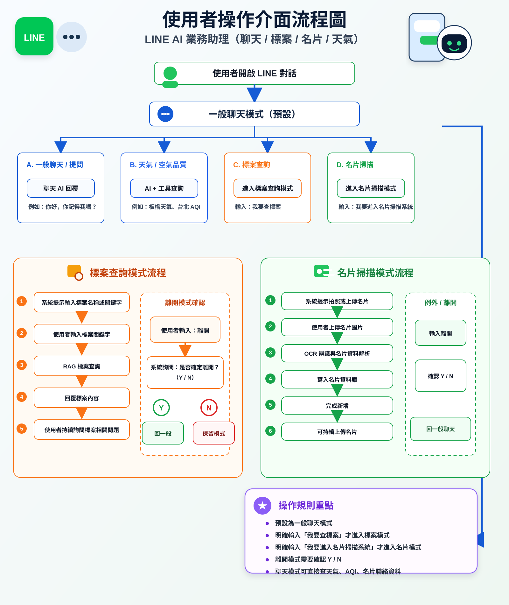
Workflow diagrams
這些圖把每個 n8n workflow 的入口、分流、主要處理、確認與輸出整理成視覺化流程。 它們適合放在網站上當作品佐證，也適合之後拿來對照實際 workflow JSON。
示範從 LINE 訊息進入、分類、記憶、AI 回覆到回傳使用者的完整路徑。

把天氣、AQI 或公開資料查詢包成 LINE 可操作流程。
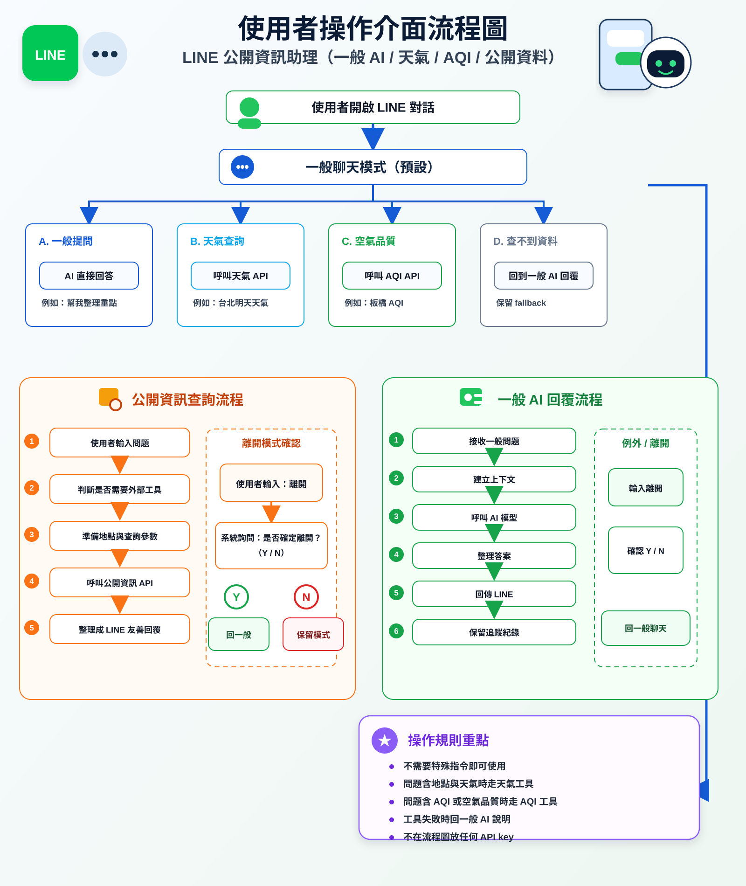
把圖片、OCR、資料確認與後續整理串成一條工作流。
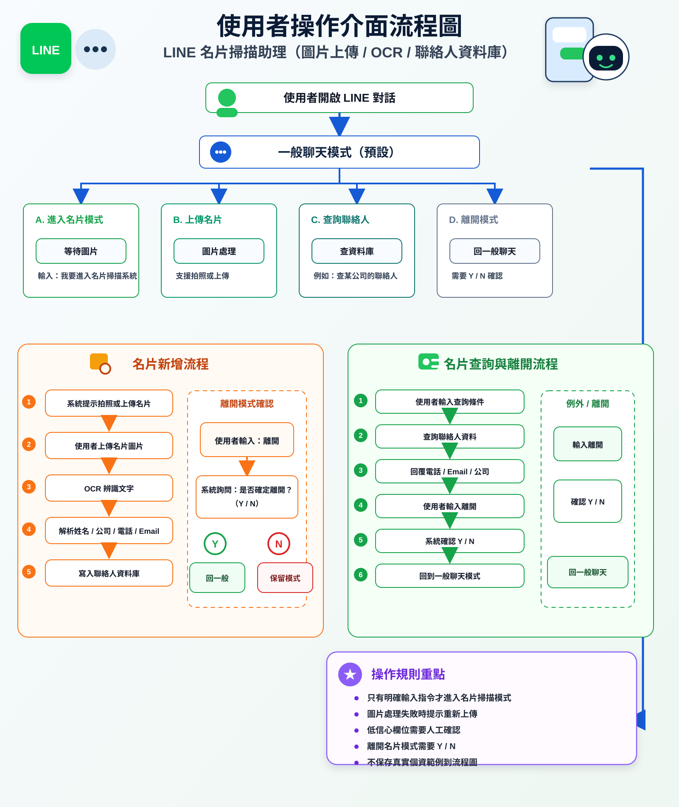
整理標案搜尋、文件查詢、RAG 回答與結果輸出的主流程。
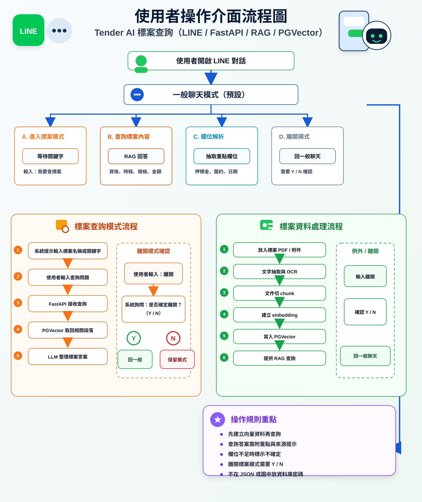
說明查詢請求如何進入 API，並與向量資料庫和 LLM 回答流程銜接。
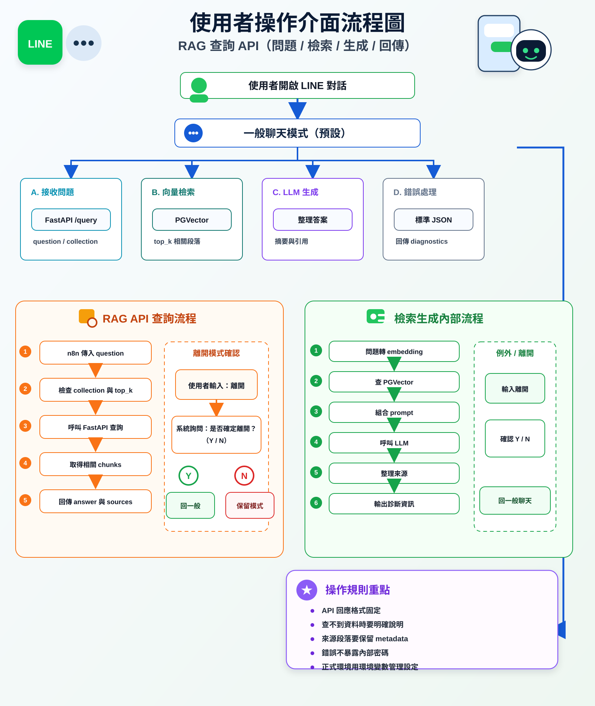
呈現文件切分、嵌入、寫入資料庫與重建索引的流程。
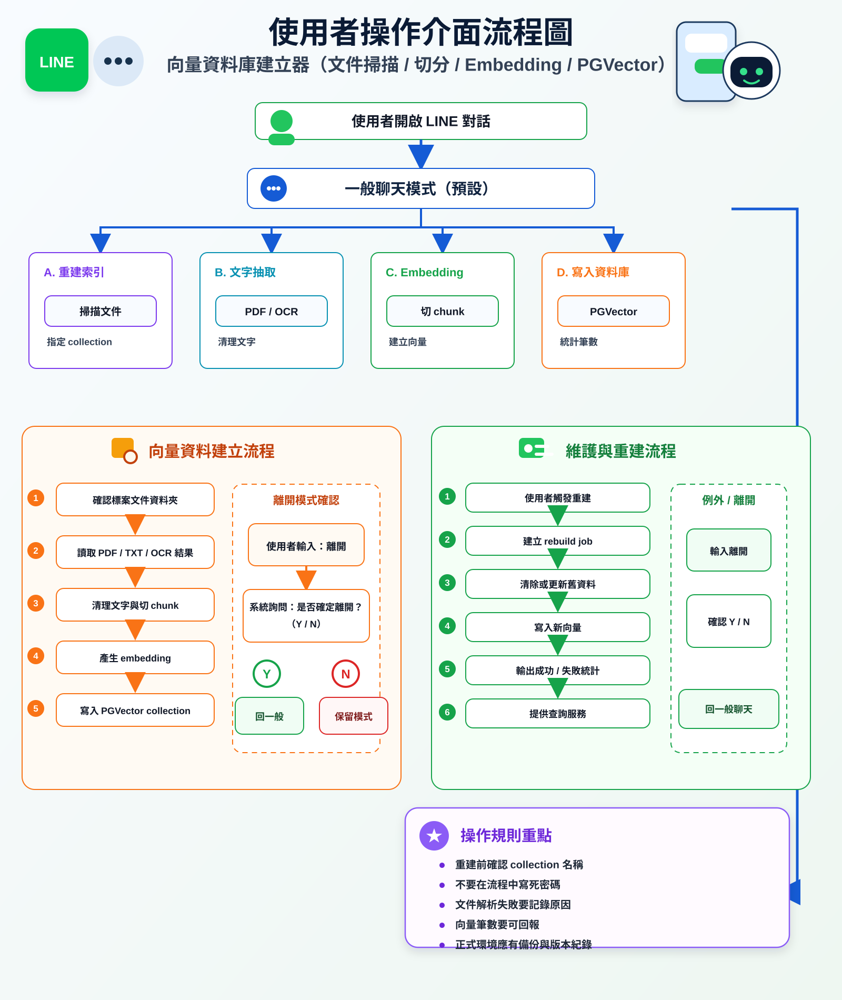
把檔案接收、OCR、文字整理與後續查詢前處理拆開呈現。
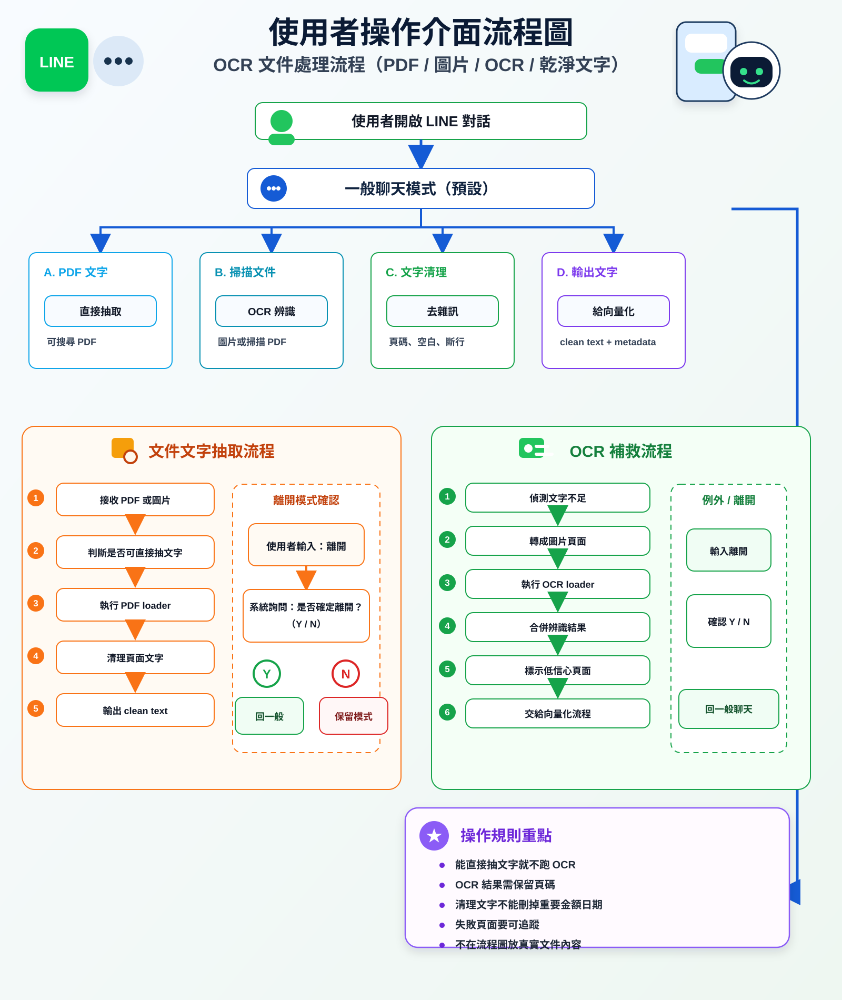
把標案文件中的條件、日期、資格與摘要整理成可用資料。
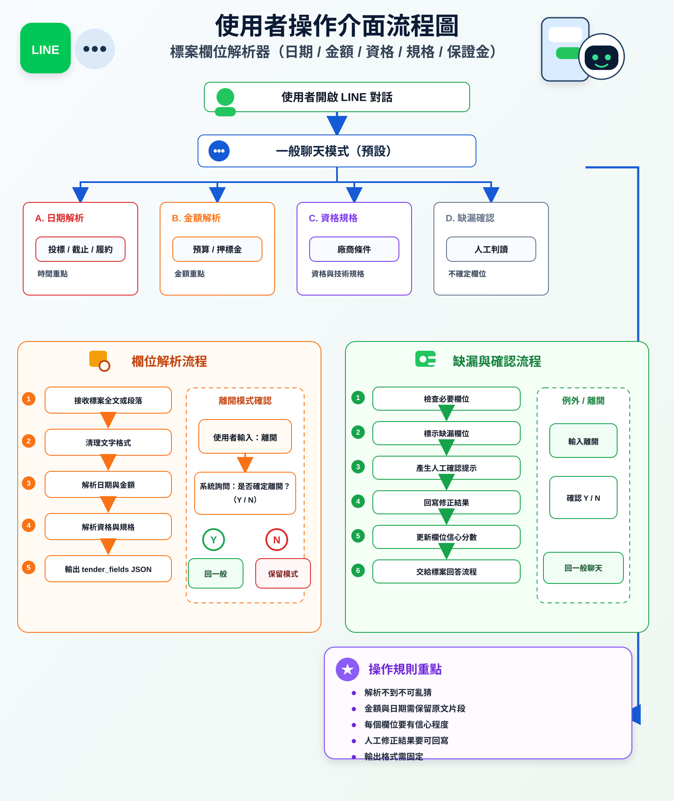
集中展示 Tender AI 主要 workflow 如何串接子流程。
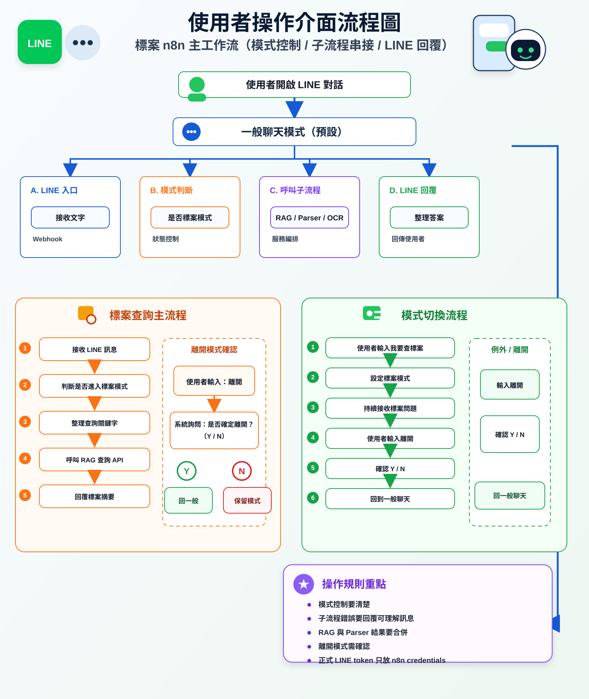
呈現自動化中心如何管理入口、路由、子流程與輸出規則。
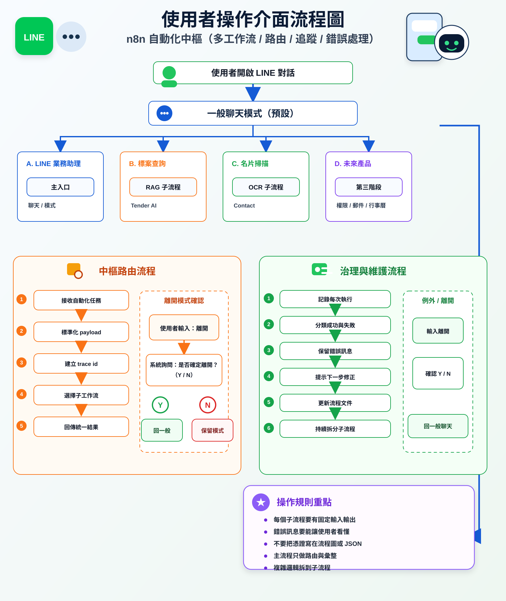
把未來產品化、管理介面、權限與營運功能整理成規劃流程。
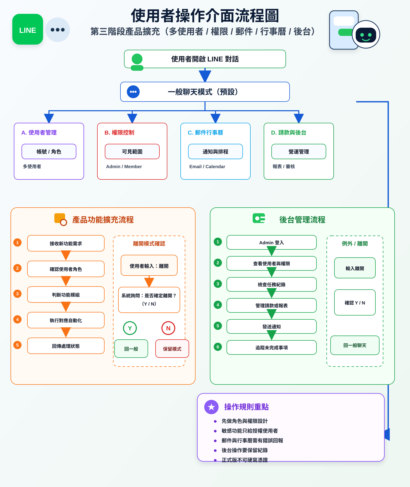